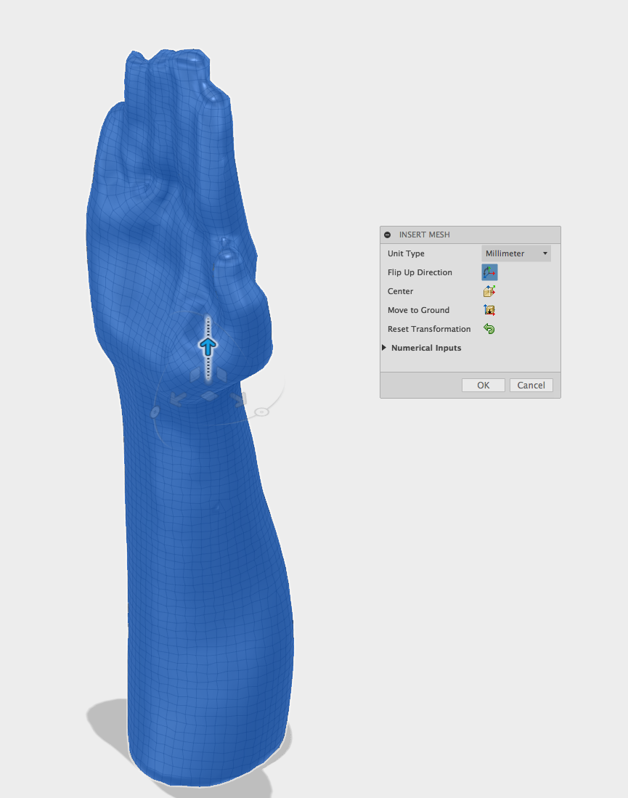
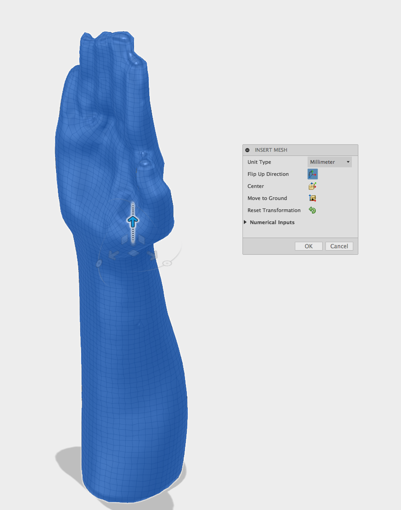

MyOrthotics 2.0 Workshop[a][b][c]
MyOrthotics 2.0
Is a new version based on the first final project of the Fab Academy Mthotics.[d]
This version is based on cutting and its purpose is to explore rapid construction for orthotics for first aid cases or temporary use.
The first version of this orthotic workshop was realized in the Fab Lab Kamp-Lintfort Hochschule Rhein Waal for the course of Biomechanics and Biomaterial and for the class of Prof. William Megill.
The changes of the board are designed for the workshop Hands on assistive devices (MyOrthotics 2.0) that took place in the international Fab Lab Conference in Santiago de Chile. [e]
In the repository you can find the template of the splint for men and women to an drec introduction of the topic.. For optimal fitting, 3D scanning the patient's arm and hand is recommended.
Please refer to the iSense scanner in the following website:
https://www.3dsystems.com/shop/support/isense/videos
Or look in the documentation of the repository:
http://archive.fabacademy.org/archives/2016/fablabkamplintfort/students/124/
IMPORTANT CONSIDERATIONS FOR MAKING THE SCANNER:
Position of the hand
Scale of the hand
Depending on the 3D Scan you will see[h] that the measurements are not corresponding to the original model.
Please edit it in the mesh editor in order to have a better workflow in the next steps.
In order to work in the next steps with 360 Fusion and to level the draft analysis in the curvatures of the hand we will use the program ReMake. This program enables the conversion from a triangular mesh to a OBJ Quads mesh.
-> Open the model
-> Scale the model if it has a wrong scale
-> Cut the parts that you don't need
-> Smooth the model and close the holes
-> Make an analysis in order to close the whole surface
-> Export the model in OBJ Quads for 360 Fusion
Open a new file in 360 Fusion.
Go to the file[i] we will go to the sculpt environment in order to transform the mesh quads,
In this environment you can insert the mesh going to the top panel INSERT as the pictures show.
In Utilities you can convert the model
After this process you can proceed to transform this mesh to T-Splines. This process requires some patience!
Now you can edit the mesh in order to reduce the draft angles and make a homogeneous surface. This process will help to generate a smooth surface in the following forms:
-> Delete quads
-> Delete lines
-> Reconstruct areas
When the model is finished don't forget to do the analysis of the object by going to the UTILITIES
Repair Body > Select mesh > Close
After repairing you can proceed to close the sculpt environment and continue to working in the Model Environment.
The model should look as smooth as possible and with less sub divisions the probabilities of an optimal surface will increase. If you want to see more details of the in-detail the Angles going to[j] ANALYSIS > draft Analysis and Zebra Analysis as is illustrated in the following pictures.
CUTTING TOOLS
We will define the form of the splint, first by drawing the lines that will cut the body[k].
Go to the SKETCH > Spline > [l]in the first sketch will define the Top line , consider in the cutting the part of the support of the Thumb Motor. [m]
In the second sketch use the sight sketch[n] in order to do the lateral line.
Here we have to consider the point in which we will attach the bells for the adjustment of the splint.
In the second step we will go to the environment PATCH.
This environment enables the work with surfaces and stitching and deleting surfaces easily just selecting and transforming them. [o]
Going to the panel Modify > Split Body, you can select the body and cutting tool the one of the spline lines that you select [p]
For more details please look in the description of the MyOrthotics Fab Academy Adriana Cabrera.
In path[q] you can do offset of your Material in the tool create in case If you want to calculate the textiles and the polipropilene wire. [r]
If you will work in the online version of Exact Flat, please Export ONLY the surface as a STL data,
FLATTERING SPLINT -> EXACTFLAT
You can go directly from 360 Fusion to the ExactFlat environment installing the plugin, otherwise you can use the online version.
For the people that have an online version, upload the model and please pay attention to the Units.
After uploading you can proceed to open[s] and if necessary, reduce again the number of triangles using the tool Adapting mesh[t].
When the mesh is ready, you can proceed to flattening the surface by clicking on FLATTEN
Dos forget always to select the body.[u]
Select a method in this case FRACTURE, which permits to extend the surface and make cutting if it is needed.
To finalize the process you can proceed to optimizing it by using the panel OPTIMIZE. In this option you can select the material that you will use, in my case I selected Vinyl.
You can go to finish and Export your Draw in PDF or DXF.
2D EDITION
Depending of the software and in order to optimise the time I did a fix bells for this design that you can include in Rhino or Illustrator , the file Is Included [v]
The folding pattern is the aggregation of pattern also generated From a cone shape. The splint is made based on the art of folding, in which the material transforms to a memory shape through the semi cuts, which also provide the device the required stability.
It is easy to modified in the hand positioning the motors and changing the thumb area folding.
Proceed to cut the material depending on your settings of the laser cutter
Before test the material in order to test the semi cuts and have clean edges!!!
You can take measurements with the measuring tape, to take the measurements from your finger respecting the spaces from each and inbetween the fingers.
As the photo shows please consider the thickness of the material. In order that you can have a structure that support
[a]o workshop documentation ?
[b]_Marked as resolved_
[c]_Re-opened_
[d]MyOrthotics 2.0 is a new version of the/my Fab Academy final project, named MyOrthotics.
[e]revisar juntos
[f]suena un poco raro, revisar juntos
[g]aqui falta algo
[h]might notice (o siempre están mal las medidas ?)
[i]?
[j]If you want to see/check the angles in more detail go to ANALYSIS > draft analysis and zebra analysis, as illustrated in the following pictures.
[k]cortar el cuerpo?
[l]punto aqui?
[m]revisar juntos
[n]?
[o]revisar
[p]revisar, léelo
[q]que es path?
[r]revisar, falta mayusculas pa saber cual es el nombre del panel etc.
[s]open the file?
[t]o Adaptive Remesher, como en la foto?
[u]revisa
[v]revisar juntos